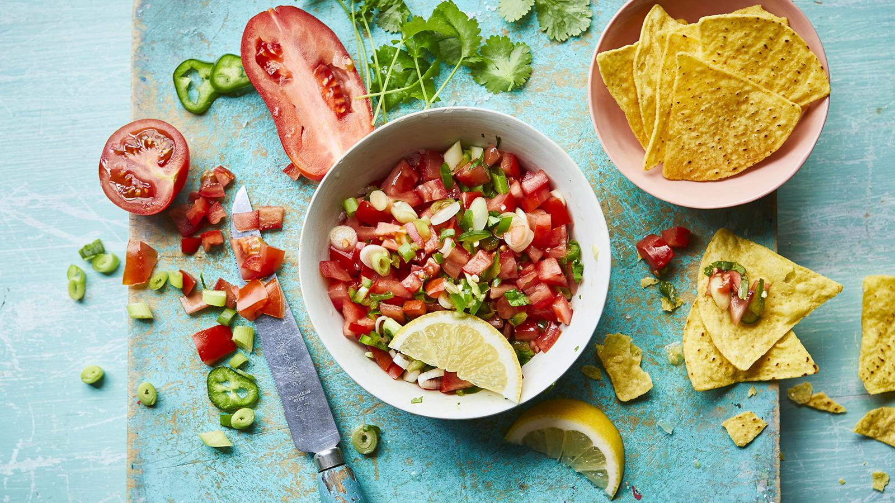

Tomato Salsa

Zesty, fresh and juicy – this easy tomato salsa is a great way to use up very ripe tomatoes. Perfect with tortilla chips or spooned liberally over nachos.
Ingredients
- 3 ripe tomatoes, finely chopped
- ½ onion or 4 spring onions, finely sliced
- handful coriander, finely chopped
- 1 green chilli, finely chopped
- 1 lime, juice
- pinch of salt
Steps
- Combine the tomatoes, onion, coriander and chilli in a bowl.
- Squeeze over the lime or lemon juice and season with salt. Mix to combine.